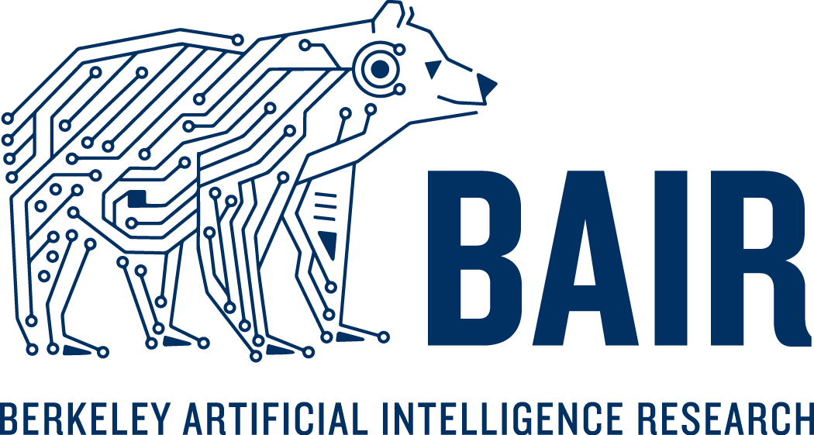

Experience

CS 61A Course Staff
Department of Electrical Engineering and Computer Sciences
Aug 2026 – Present
- Co-run weekly lab and discussion sections and lead small-group exam prep sections for a 1,700-student course; design academic integrity measures and review student work for potential violations.

Berkeley Artificial Intelligence Research (BAIR)
Undergraduate Researcher
Advisor: Prof. Koushil Sreenath
Research on agentic robotics, multi-agent collaboration, and humanoid locomotion for complex real-world tasks.
Jul 2026 – Present
Undergraduate Researcher
Advisor: Prof. Masayoshi Tomizuka
Research on diffusion-based generative models for multimodal robotic planning and policy learning.
Jan 2026 – Present
CITRIS and the Banatao Institute
Undergraduate Researcher
Advisor: Prof. Shankar Sastry
Work on learning-based manipulation systems and policy development.
Jan 2026 – Aug 2026

Eta Kappa Nu (HKN) · UC Berkeley
Service Officer
Sep 2025 – Present
- Organize community service, K–12 EECS outreach events, and hands-on workshops; tutor Berkeley undergraduates in core computer science and electrical engineering courses.